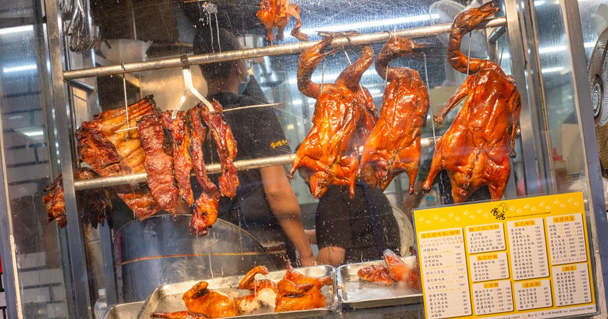

布雷克｜家鴻燒鵝興安店：南京復興排隊燒臘，烤鵝腿飯一開店就秒殺

一句話摘要
《家鴻燒鵝興安店》是南京復興站步行約 8 分鐘、興安街上的排隊燒臘便當店，最大亮點是台北較少見的烤鵝與秒殺款烤鵝腿飯，適合收進南京復興／中山區午餐與便當口袋名單。
為什麼保存
這篇屬於實用生活／美食資訊，原文資訊完整：有店名、地址、交通、電話、營業時間、排隊狀況與推薦餐點。未來在南京復興站、興安街、合江街一帶找便當、燒臘、烤鵝飯或上班族午餐時，可以快速查回。
店家資訊
- 店名：家鴻燒鵝 興安店
- 地址：台北市中山區興安街53-4號
- 交通：捷運南京復興站步行約 8 分鐘；斜對面是福德涼麵
- 電話：(02) 2518-1802
- 營業時間：11:00–20:30
- 類型：港式燒臘、燒鵝、便當、南京復興站午餐
原文重點整理
- 《家鴻燒鵝》是台北開業多年的燒臘店，文章聚焦興安店；另有龍江店。
- 興安店在 Google 地圖累積超過 4000 則評論，生意非常好，內用外帶常見排隊人潮。
- 最大特色是台北較少見的烤鵝，尤其烤鵝腿飯常常一開店不久就售完。
- 店內空間類似一般燒臘店，但原文認為比一般燒臘店乾淨；用餐尖峰與下午時段仍可能客滿。
- 炒類餐點可能需要等較久；若目標是烤鵝腿飯，建議接近開店時間就到。
口袋菜單
| 餐點 | 原文價格 | 備註 |
|---|---:|---|
| 三寶飯 | NT$130 | 基本款燒臘便當；原文吃到油雞、烤鴨、叉燒組合，配菜普通但份量足。 |
| 烤鵝飯 | NT$160 | 招牌品項，鵝肉軟嫩、肉汁豐富，皮下脂肪厚，帶骨較多要留意。 |
| 烤鵝腿飯 | NT$190 | 秒殺主餐，鵝腿份量足、鵝皮酥脆、油脂豐厚；原文三訪才吃到。 |
| 叉燒 | — | 原文評價高，偏甜、有焦香，肉質軟嫩不柴。 |
| 烤鴨 | — | 油脂足、甜鹹感明顯，原文也列為喜歡的品項。 |
適合情境
- 南京復興站、興安街、合江街附近想找上班族午餐或便當。
- 想吃台北較少見的烤鵝飯、烤鵝腿飯。
- 可接受排隊、漏單或服務節奏較忙的熱門老店氛圍。
- 搭配附近的福德涼麵、南京復興站美食清單一起規劃。
實用提醒
烤鵝腿飯數量有限，原文經驗是開店後很快售完；如果專程為烤鵝腿前往，建議一開店就到，並以現場供應為準。營業時間與價格也可能調整，出發前可再查 Google Maps 或電話確認。